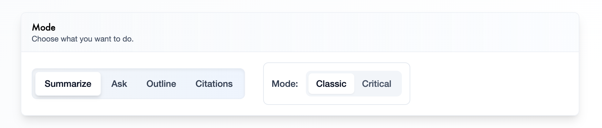
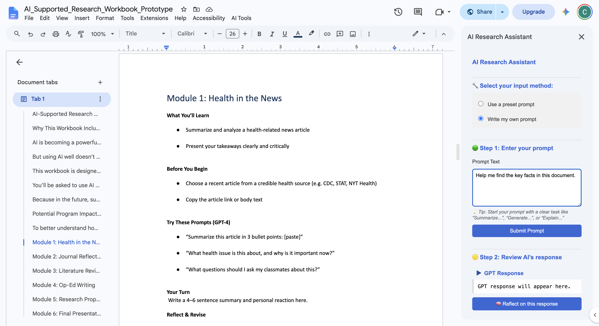

Faculty pain points
- Repetitive questions consuming mentorship time
- No visibility into where students were struggling
- Slow feedback cycles
- No structured way to identify which students needed intervention
Helping first-gen students interrogate assumptions, representation gaps, and framing in academic literature.
Northwestern Medicine NM Scholars is a competitive summer pipeline program introducing high school students — primarily first-generation and students of color — to medicine and clinical research. The program is designed to build the next generation of physician-scientists by giving students early, authentic exposure to the research process before they enter undergraduate education.
The program is selective, rigorous, and growing. When it nearly doubled in size, the infrastructure supporting student learning did not scale with it. That gap is what ResearchBridge was built to close.
When NM Scholars grew from 18 to 43 students, the existing model broke. Students were overwhelmed by research tasks they had never been taught to do. Faculty were spending most of their time answering the same questions instead of doing the mentorship work only they could do.
The opportunity was not to digitize the existing curriculum. It was to redesign how research was taught, and to use AI to do it without removing student agency in the process.
Research is hard for high school students not because they lack ability but because the process is invisible. Academic papers feel inaccessible. Literature reviews require synthesizing across sources before students know what synthesis means. Every assignment assumed skills that had never been explicitly taught.
The result was a predictable failure pattern. Students got stuck, waited for faculty, asked the same questions everyone else had already asked, and fell behind. Faculty answered the same questions repeatedly instead of doing the mentorship work only they could do.
When the cohort grew from 18 to 43 students, that failure pattern became a program-level problem. The existing model was not scalable.
Six faculty interviews surfaced the core insight: the problem was not that students lacked intelligence. It was that the research process had never been made legible to them. Faculty wanted two things from any solution: qualitative feedback on how students were engaging with the work, and quantitative data on outcomes. Not one or the other. Both.
Student observation revealed a second insight: overwhelm was structural, not motivational. When students could see the whole research process at once, they froze. Progressive disclosure was not a UX preference. It was a pedagogical requirement.
Curriculum mapping revealed a third insight: every assignment in the program built on the previous one, but nothing in the existing experience made those connections visible. Students treated each assignment as isolated. Faculty treated them as cumulative. That gap was where most of the confusion lived.
An AI-powered learning platform that guides students through the entire research journey while preserving instructor mentorship. The goal was never automation. The goal was structured learning.
Most edtech AI products are chatbots bolted onto existing workflows. ResearchBridge was designed from the opposite direction: start with the learning objectives, map the research process to explicit stages, and design AI interactions that serve each stage specifically rather than offering a generic assistant that serves none of them well.
Four principles that governed every decision:
The assistant guides rather than produces. Students remain responsible for every conclusion. The AI asks questions more than it answers them.
Faculty maintain oversight. AI supports the learning. Faculty do the mentorship. Those are not the same thing and the product never conflates them.
Research is overwhelming because everything appears at once. Divide the experience into modules. Students always understand what they’re doing now and why it matters next.
No AI capability exists because it is technically impressive. Every feature traces directly to a specific learning objective identified in the curriculum mapping.

Most AI edtech products ask: what should the AI do? ResearchBridge asked a different question.
Can changing when AI helps produce better learning than changing what AI does?
The four cognitive scaffolding tools — Summarize, Ask, Outline, Citations — remain identical in both modes. What changes is the interaction design. The toggle is not a feature. It is the answer to the hardest product question in AI education: how do you prevent AI from doing the thinking for the student?
Most products answer this with policy — usage limits, honor codes, instructor monitoring. ResearchBridge answered it architecturally. Critical mode introduces a moment of productive struggle before AI assistance arrives. That moment is where learning happens. The AI does not remove it. It waits for it.
Each tool supports a different kind of thinking:
Condense an article into its essential ideas. Helps students identify the main argument and key findings without getting lost in dense academic text.
Generate or answer questions about the article. Encourages curiosity, clarifies confusing concepts, and deepens comprehension through inquiry.
Organize the article into a logical structure. Helps students understand how ideas connect and recognize the flow of an argument.
Extract and format references from the article. Teaches proper source attribution while reducing the mechanical burden of citation formatting.
| Category | Classic | Critical |
|---|---|---|
| AI role | Provides immediate assistance | Withholds full assistance until student attempts first |
| Student role | Receives answers, summaries, outlines right away | Must attempt the task before receiving AI feedback |
| Goal | Efficiency and accessibility | Active thinking, reflection, deeper learning |
The research lifecycle was broken into seven discrete modules, each with its own AI interaction model, each building explicitly on the previous:
Each module made its connection to the next explicit. Students always knew where they were in the arc and what they were building toward.
The first version of ResearchBridge was built as a Google Docs sidebar. The decision was deliberate: students were already writing in Google Docs. Adding a separate platform would introduce context switching at exactly the moment when cognitive load was already high. The AI remained contextual to the current assignment — no copy-pasting, no switching tabs, no losing the thread.

The alternative was a single AI assistant for the entire research process. That would have been faster to build. It would also have reproduced the exact problem it was meant to solve — presenting the full research process to students all at once without structure. Modular was the right call. It was also the harder build.
Building a standalone platform from the start was considered and deferred. The Google Docs integration validated the interaction model before committing to infrastructure. That sequencing was correct — the prototype surfaced interaction design problems that would have been expensive to fix in a full platform.
The product could have been designed as an autonomous agent — completing assignments on behalf of students, generating first drafts, producing literature reviews. That would have been technically straightforward and pedagogically catastrophic. The decision to build a tool rather than an agent was the most important product decision in the entire project. The Classic vs Critical toggle is the architectural expression of that philosophy. Everything else follows from it.
Peer comparison features were cut. Knowing how other students were performing created competitive anxiety that worked against learning. Automated grading was cut. Assessment required faculty judgment, not algorithmic scoring. Open-ended chat was cut. Unconstrained conversation with an AI in an educational context produces exactly the dependency the product was designed to prevent.
ResearchBridge shipped, scaled, and became central to the program’s curriculum. By the metrics that mattered — cohort size, faculty load, student support — it worked. But the most interesting questions about this product are not whether it worked. They are about what it revealed about building AI tools for learning contexts, and what a more rigorous next version would need to answer.
The Classic vs Critical toggle is not a settings feature. It is the core pedagogical argument of ResearchBridge made into an interaction. Every other decision — the four tools, the module structure, the Google Docs integration, the instructor dashboard — supports it. Products that add AI to education without answering the question of when AI helps tend to produce students who are better at using AI, not better at thinking. The toggle is ResearchBridge’s answer to that problem. It should have been designed first, not discovered midway through.
The AI prompts governing each module interaction were not an engineering detail. They were the product. Getting them right required the same iteration cycle as any other feature — hypothesis, prototype, test, revise. Faculty feedback on prompt quality was as important as faculty feedback on UI. That should have been clearer from the start.
The underlying research question — whether introducing desirable difficulty before AI assistance strengthens comprehension and critical thinking compared to immediate AI help — was not validated through a controlled study in this version. That is the most important question the next iteration needs to answer. ResearchBridge built the instrument. The study has not been run.
Validating the interaction model in Google Docs before building a platform was correct sequencing. But the sidebar format imposed real constraints on what the AI could show students and how modules could connect to each other. The move to a dedicated platform was inevitable. Building there from the start, with the interaction model already validated, would have been cleaner.
The cohort growing from 18 to 43 students was not just a logistics challenge. It was a design constraint that shaped every decision about AI interaction, module structure, and instructor visibility. Designing for scale from the beginning rather than retrofitting it would have changed some early choices — specifically around how faculty oversight was structured and how student progress was tracked across the full program arc.